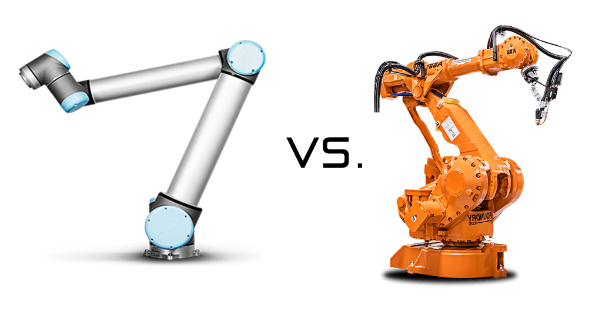
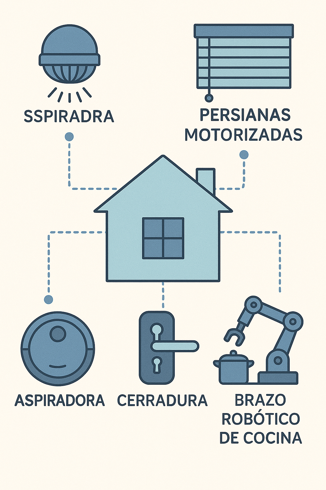

Capítulo 2 · Historia y Evolución de la Robótica y su Relación con la Domótica
1. Primeros pasos: autómatas y mecanismos antiguos
La idea de construir máquinas que imiten la vida humana o animal es tan antigua como la civilización.
- En la Grecia clásica, Herón de Alejandría describió en su libro Automata mecanismos que abrían puertas o movían figuras mediante poleas y vapor.
- En el mundo árabe medieval, Al-Jazari diseñó relojes de agua y autómatas músicos en el siglo XIII.
- En el Renacimiento europeo, relojeros como Leonardo da Vinci crearon caballeros mecánicos con engranajes y resortes.

2. Revolución industrial y robótica moderna
Con la llegada de la electricidad y los motores, los autómatas dieron paso a la automatización industrial:
- Siglo XVIII–XIX: Tejedores mecánicos como el telar de Jacquard (1801), que usaba tarjetas perforadas → precursor de la programación.
- Siglo XX: Primeros robots industriales:
- Unimate (1961): brazo robótico para General Motors.
- Uso en soldadura y manejo de piezas repetitivas.
- Décadas siguientes: Japón lidera la producción con robots en fábricas de automóviles.
3. Robots de servicio y colaborativos
- Años 80–90: Robots empiezan a salir de la industria hacia la investigación y la educación.
- Siglo XXI: Surge el concepto de cobots (robots colaborativos), diseñados para trabajar junto a humanos sin jaulas de seguridad.
- Ejemplos: Universal Robots (UR), Baxter, Franka Emika.
- En paralelo, nacen los robots de servicio: aspiradoras autónomas, drones de consumo, robots de asistencia médica.

4. El puente hacia la domótica
La domótica busca automatizar el entorno doméstico: iluminación, seguridad, clima, entretenimiento. La robótica amplía esas capacidades al incorporar movimiento y manipulación física.
Ejemplos de integración:
- Robots móviles (Roomba, aspiradoras con mapeo láser).
- Manipuladores en casa (brazos de cocina, asistentes para movilidad reducida).
- Robots sociales (asistentes con voz, robots de compañía para adultos mayores).
- Sistemas distribuidos (sensores de movimiento, cerraduras inteligentes, control centralizado).

5. Tendencias actuales
- Internet de las Cosas (IoT): Conexión de electrodomésticos y robots a la nube.
- Inteligencia artificial: Reconocimiento de voz, visión computacional, aprendizaje de hábitos.
- Energía eficiente: Domótica integrada con paneles solares y almacenamiento en baterías (DC → AC inversores).
- Robots sociales y de asistencia: Envejecimiento poblacional impulsa la robótica en el hogar.
- Interoperabilidad: Protocolos como Matter, Zigbee y Wi-Fi permiten que robots y dispositivos de distintas marcas trabajen juntos.
6. Actividad de reflexión
Pregunta:
Piensa en tu casa o espacio cotidiano: ¿qué tarea robótica o domótica te gustaría automatizar y por qué?